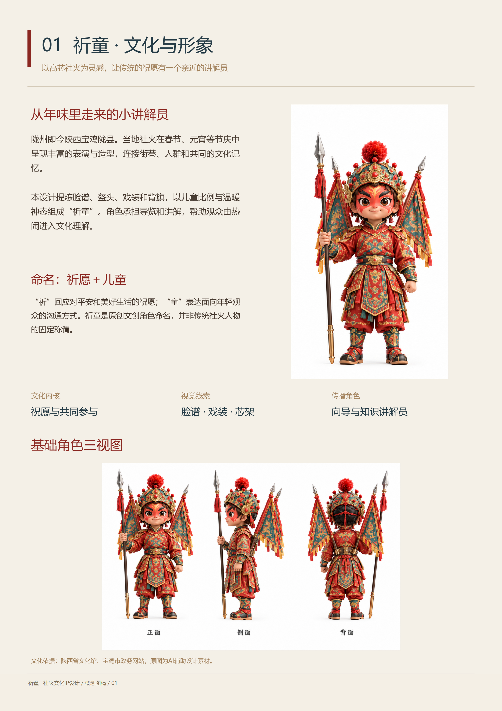
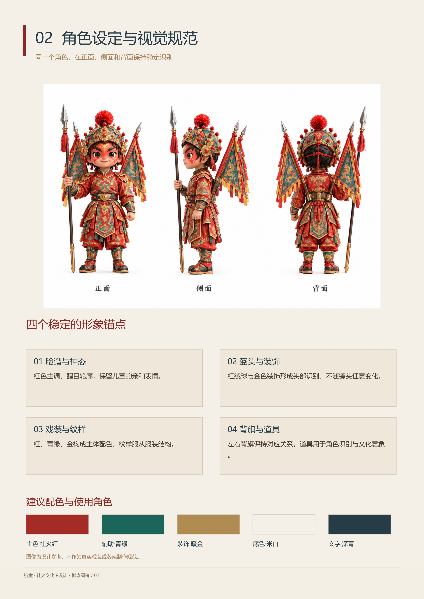
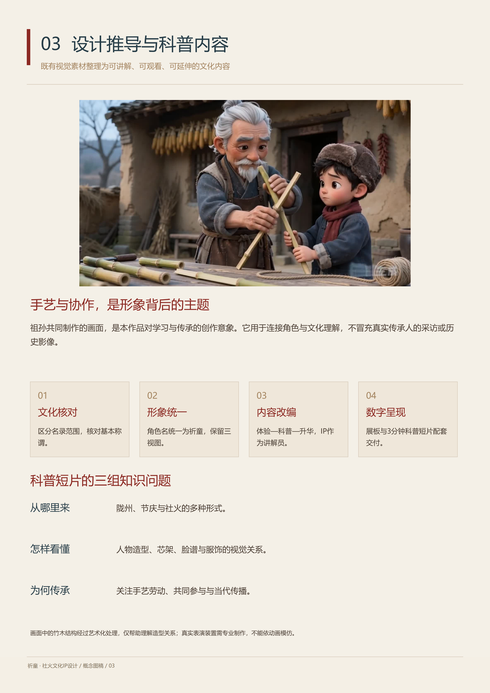
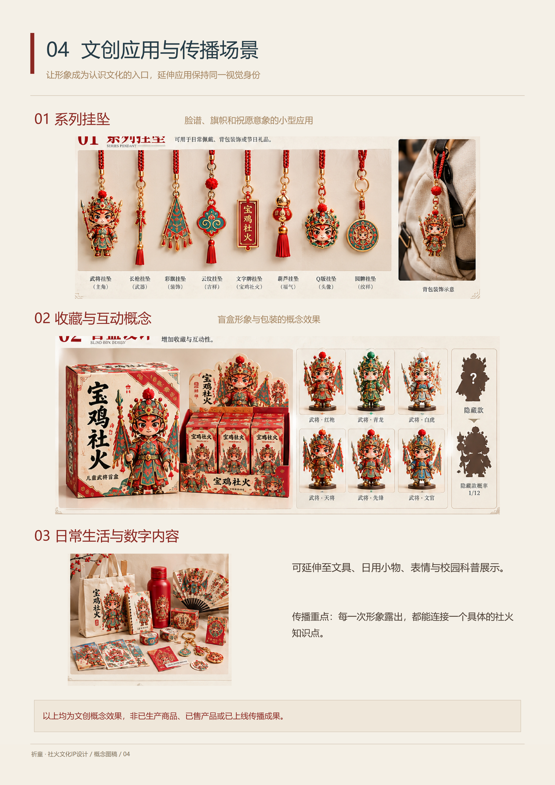

<!doctype html><html lang="zh-CN"><meta charset="utf-8"><meta name="viewport" content="width=device-width,initial-scale=1"><title>祈童文化 IP · 鲍温旭</title><link rel="stylesheet" href="works.css"><header><a href="works.html">鲍温旭 / 全部成果</a><a href="index.html">原作品集 ↗</a></header><main><h1>祈童 · 社火文化 IP</h1><p>角色设定、三视图与应用设计展板。点击图片查看原图。</p><a href="docs/qitong-research.pdf">阅读文化背景研究 PDF ↗</a><div class="gallery"><a href="assets/review/qitong-1.png"></a><a href="assets/review/qitong-2.png"></a><a href="assets/review/qitong-3.png"></a><a href="assets/review/qitong-4.png"></a></div></main><footer>鲍温旭 · 西北大学现代学院 · 2026.11<br><small>浏览器体验请使用较新的 Chrome、Edge 或 Safari。项目状态以各入口说明为准。</small></footer></html>